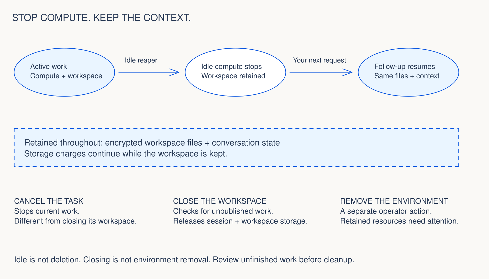

If a task takes longer than expected
Read its current status and latest progress before retrying. For
coding-tool tasks, agentx_get_task distinguishes
STARTING, RUNNING, SUCCEEDED, FAILED, CANCELLED, INTERRUPTED, and
CLOSED. A wait can time out while the task continues.
A successful task status is not proof that every check passed. Read the check evidence separately.
Choose the right lifecycle action.

| Action | Effect | Next step |
|---|---|---|
| Idle | Compute can stop; workspace files and conversation remain. | Continue the same task when needed. |
| Cancel task | Stops current work. | Inspect status and partial changes. |
| Close workspace | Checks for unpublished work before releasing session and workspace storage. | Preserve unfinished changes if closure refuses. |
| Remove environment | Separate operator procedure; retained resources and external apps require attention. | Use release-matched teardown guidance when published. |
Costs you should expect
AWS services, retained storage, and model usage contribute to the bill. Per-task usage telemetry and installer estimates help explain costs; budget alerts do not cap spending.
Illustrative estimate, not a subscription price: us-east-1, default Bedrock models, 1,000 turns, 100 worker sessions, 60 worker instance-hours, and 10 retained workspaces. Derived from the source pricing assumptions; actual usage and prices vary.
Operator health checks
With the installed CLI and your environment’s operator access:
agentx --env <env> doctor --region <region>Read the reported failures before making changes. The public upgrade, recovery, and teardown procedures will be published with the installation guide. Do not infer a crash-recovery guarantee from workspace persistence.
8acb7ac00c97 · 5
October 2026. These guides describe inspected code; the public
installation path is still in preparation.